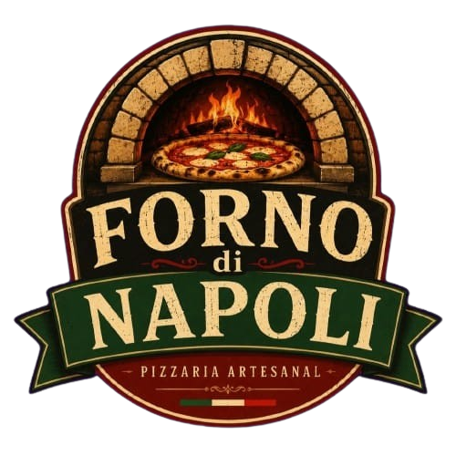

Pizzaria Di Napoli

O verdadeiro sabor de Nápoles
Da tradição napolitana às mesas brasileiras. A Forno di Napoli traz ao Brasil a verdadeira experiência da pizza italiana, unindo receitas clássicas, forno a lenha e ingredientes selecionados.
Quem somos?
Somos uma pizzaria inspirada na tradição de Nápoles, criada para levar ao Brasil a autêntica experiência da pizza italiana.
Nossos ingredientes
Selecionamos ingredientes de qualidade para preservar o sabor, a simplicidade e a tradição das receitas italianas.
Nosso diferencial
Cada pizza é assada em forno a lenha, garantindo o aroma, a textura e o sabor característicos da verdadeira pizza napolitana.